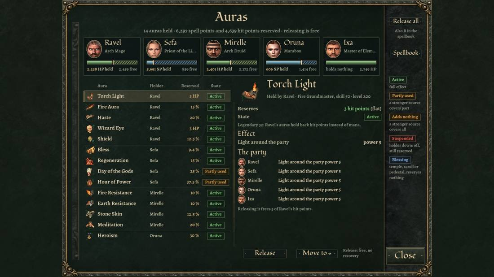
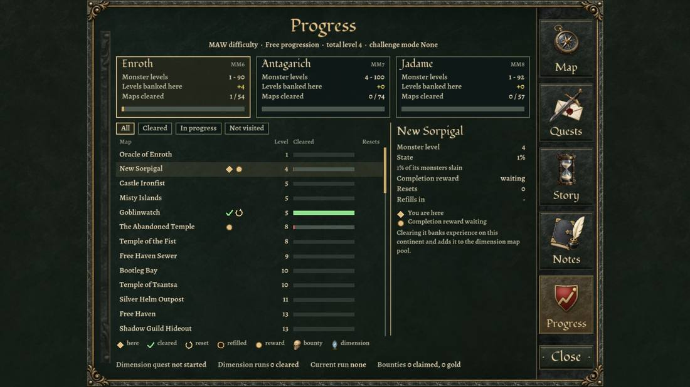
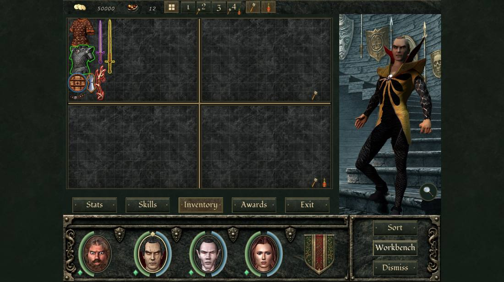

Split arcs: HP wraps the left of each portrait (green from 66 %, yellow above 33 %, red at
33 % or below), mana the right.
Reserved mana: mana held by auras is a dark hatched band at the end of the mana arc, with a gold
mark where the free pool ends. A Legendary 32 wearer's hatching is on the HP arc instead.
Assassin combo points: five ruby gems outside the HP arc; half a point lights half a gem. Hover
them for the finishers you can afford.
Elementalist stacks: ten amber gems and a number; past 10 stacks they turn pale gold.
Map progress bar
A thin channel along the top of the party frame fills violet as you clear the map. Its tab reads, for example,
38.5 % · 112 / 292: the share cleared, then monsters slain out of those needed. It turns
gold once the map is complete. Where the dead can rise (Nightmare and the Doom modes), a mark at 65 % stays red until
you pass it.
Potions and scrolls
The party frame's end ornaments carry two sockets: scrolls on the left, potions
on the right (also T and V). Each opens a paused list of what the party carries,
for the active member; click a portrait to change who drinks. The potion list previews what the hovered potion
restores or cures and marks potions that would do nothing now. Right-click a row to put it on a quick slot;
N uses slot 1. The older per-portrait potion rings are a setting, off by default.
Aura panel
Click the party buff icons at the upper left (or bind Open Auras) for every held aura: who holds
it, what it reserves and what each member really gets. States: Active, Partly
used, Adds nothing (a stronger source covers it), Suspended (holder down)
and Blessing (temple, scroll or pedestal; reserves nothing). Release is free;
Move to recasts it from another member.

The aura panel. "Adds nothing" is mana spent for nothing.
Character screen
The stats page shows Melee, Ranged and Spell Power (damage per second) and
Vitality (effective health), and each resistance as the share of damage it removes against
monsters of your level. Stat names are coloured: Might red, Intellect orange, Personality blue, Endurance green,
Accuracy yellow, Speed violet, Luck white.
Item popups show how Power and Vitality would change if you wore the item: the quickest way to compare gear.
Each skill row's "N pts" tag is the real cost of the next point after the second-skill
discount; hover it to see which skills share it.
Hold Left Alt to outline items in their rarity colour (or set Item rarity glow to always on in
Settings → Interface).
Journal
Progress tab: your mode and total level, a card per continent (monster levels, levels banked,
maps cleared), and every map with its clear bar and flags (cleared, reset, refilled, reward waiting, bounty,
dimension run).
Notes › Trainers: a searchable trainer finder per continent, with the trainer's house on its
map. It lists the teachers you have met; any tavern sells that continent's Ledger of Teachers
for 2,000 gold, which names them all.
With Trainer hints on (Settings → Rules), a skill's tooltip names the next mastery's
requirement and the nearest teacher you know.

The journal's Progress tab.
Bags and loot
Four bags a character; 1–4 zoom one. Tag a bag as the crafting bag (Shift+B
or the hammer) or the alchemy bag (the potion button): matching pickups go there even while it is closed.
Sort sorts the open bag, Shift+Sort all that member's bags, Ctrl+Sort the party's. A
on the inventory page makes the current member the alchemist who receives alchemy items.
Gather Loot (G) pulls up to 30 corpses and 30 crafting items or dimension maps from anywhere on
the map to the party.
The loot filter (Settings → Rules) turns unwanted drops into gold (40 % of their value). See
Loot.

Four bags; the hammer and potion buttons tag a crafting and an alchemy bag.
Keys
Key
Does
G
Gather Loot
1–4 · Shift+B
Zoom a bag · tag the open bag as the crafting bag
A
Make the current member the alchemist (inventory page)
P · M · R
Cover · Mana Shield · Elementalist rotation on or off (skills page)
R
Release every aura (spellbook)
V · T · N
Potions · Scrolls · use quick slot 1
Left Alt
Show item rarity
F5–F8
Quick spells 1–4
unbound
Open Workbench, Open Progress, Open Auras, Knight Charge, Unstuck, quick slots 2–6: bind
them in the Keyboard settings
Rules the game does not spell out
Pull, don't charge. Monsters move faster than you and most of their missiles home in. Strafing
at a walk is not enough: run sideways.
Regeneration out of combat: HP and SP regeneration doubles after 20 seconds without a loss and
again with no enemy near. Wait between fights instead of resting.
No immunities: monster resistances are capped, so every element hurts every monster; nothing
resists Energy (blasters).
Weapon enchantments feed spells: elemental damage enchantments on your weapons add to your
damage spells (less for area spells).
Quick-cast control spreads itself: quick-casting Slow, the Charms, Berserk, Paralyze and the like
without a target picks the visible hostile whose effect ends soonest. Quick heals go to whoever needs them most.
Crowd control wears thin: a monster controlled for long in the last 20 seconds gets shorter
effects, then brief immunity. Spread control over the pack.
Disease makes a character take 25 / 50 / 100 % more damage by stage. Cure it before a fight.
Saving costs food on Nightmare and in the challenge modes (more indoors and near enemies),
except on a map you have completed. Autosaves are free.
Hard and up: attacking while flying ends Fly (it turns into Feather Fall), except on maps made
for flying, which say so on arrival.
Antagarich pays more: kills on its maps give twice the experience, up to +1,000 a kill.
Loot is fixed: a corpse's drop and every craft's result are set in advance; reloading does not
reroll them.
Bad-luck protection: every failed roll for a Primordial, Legendary, Celestial, artifact or
special material makes the next one likelier.
Utility skills are shared: the best member's Identify Item, Merchant, Repair, Disarm Traps,
Identify Monster and Alchemy count for everyone. Repair mends broken items by itself every few minutes.
Humans reach one mastery higher than their class allows in the utility skills.
Stat shrines (Enroth) answer in any month: the first prayer gives the party +10, later ones
+3.
Barrels and cauldrons that raised a stat stay empty for good.
Vampires are under Preservation at night (21:00–05:00) and in dungeons.